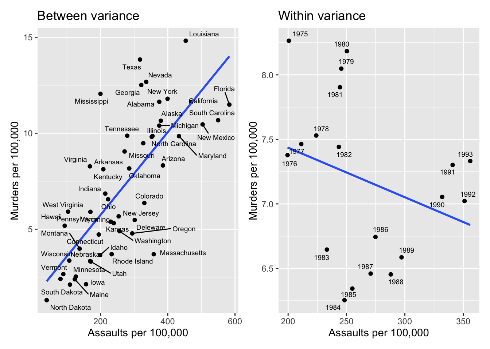

So far, we’ve paid little attention to the structure of the data we analyze. It’s often the case our data have two dimensions:
space
time
Data that vary on both dimensions are known variously as panel, pooled, or cross-sectional time-series data. Panel or pooled data combine cross sections observed over time such that we observe each cross-section, each time period.
The two dimensional structure of panel data creates issues and opportunities we’ll explore here.
Varying on Space and Time
Models using pooled or panel data must conform to the same i.i.d. assumptions as cross sectional or time series data, but now in two dimensions. So we might have serial correlation in each of \(j\) cross sections. Moreover, the cross sections may vary in unknown ways.
In this lecture, I want to introduce the structure of panel data, point to the problems that arise in it, and focus on some solutions.
Unobserved Heterogeneity
The most common feature of pooled data is that there are unobserved effects across both space (across cross-section) and time (within cross-section), and their exclusion damages the estimates. The most common solutions to these problems are fixed and random effects. Let’s begin by thinking about the data.
Panels
Panel or pooled data have repeated observations on the same set of cross-sectional units, so the data for a each cross-section \(i\) over \(t\) would look like this:
where the subscripts \(i,T\) indicate the \(i^{th}\) individual (cross-section) at time \(T=t\), and the superscript indicates the \(k^{th}\) regressor in the matrix.
Panel data is stacked by cross-sectional unit and then by time, so
Here is an example of panel data, the US states over the years 1975-1993. The data contain measures of various crime rates, unemployment, per capita income, and other characteristics of the US states.
As usual, the model will produce a vector of coefficients, \(\beta_{(1,k)}\). We could simply stack these data as illustrated above and estimate an OLS model, effectively ignoring the panel nature of the data. If we do so, we are assuming the model conforms to the GM assumptions, and specifically that the errors are identically and independently distributed across panels,
This means that for any cross-section, the errors are not correlated, and that the errors are constant both across time (within individual) and across individuals.
If this were true, it would not really matter how we stacked the data, because none of the observations would be related to one another.
With panel data, it’s difficult to believe the errors are i.i.d. in the pooled OLS model.
Two dimensions
Panel data have space (cross-section or unit) and time dimensions. Differences among cross-sections produce “between” variation, while differences over time create “within” variation.
Imagine that the cross-sectional or between variation has a different relationship to \(y\) than does the time-wise or within variation. The panel heterogeneity in this case is both two-dimensional and complex.
Here are data on the US states over the years 1975-1993 - let’s look at the murder rate per 100,000 as it relates to assaults per 100,000 population. First, let’s just look at the pooled model, ignoring the panel structure; that is, we’re just using OLS on the panel data.
code
states <-read_dta("/Users/dave/Documents/teaching/501/2023/slides/L8_panel/code/USstatedata.dta")# pooled model ggplot(data=states, aes(x=assault, y=murder)) +geom_point()+guides(color =FALSE, label =FALSE) +# scale_color_manual(values = c('black','blue','red','purple')) + geom_smooth(method ='lm', aes(color =NULL, label =NULL), se =FALSE) +labs(x="Assaults per 100,000", y="Murders per 100,000")+ggtitle("Pooled model")
Now, let’s define the two parts of the variation in panel data:
between - refers to variation between units, but removing any timewise (within unit) differences; we might do this by taking the means of variables for each state. In the example below, you can see that between US states, the relationship between assault and murder is positive.
within - refers to the variation over time within each unit, removing any differences among units; we can remove the between variation by taking means of variables over time. Below, you can see that within states (so over time), the relationship between assault and murder is negative.
The two panels below, again using murder and assault rates, break the within and between dimensions apart. The left panel is the between variation removing all the within variation; it’s the relationship of the unit means - i.e., the state mean of murder regressed on the state mean of assault (as if these were cross-sectional data). The right panel is the within variation, removing the between variation, the relationship of the year-means of murder and assault ignoring the cross-sectional differences.
code
# between removing all within variation xstates <- states %>%group_by(statename) %>%summarise(bmurder=mean(murder, na.rm=TRUE), bassault=mean(assault, na.rm=TRUE))b <-ggplot(data=xstates, aes(x=bassault, y=bmurder)) +geom_point()+# guides(color = FALSE) + # scale_color_manual(values = c('black','blue','red','purple')) + geom_smooth(method ='lm', aes(color =NULL, label =NULL), se =FALSE)+geom_text_repel(aes(label=statename),size=2.5, force=5) +labs(x="Assaults per 100,000", y="Murders per 100,000")+ggtitle("Between variance")# within removing all betweentstates <- states %>%group_by(year) %>%summarise(wmurder=mean(murder, na.rm=TRUE), wassault=mean(assault, na.rm=TRUE))w <-ggplot(data=tstates, aes(x=wassault, y=wmurder)) +geom_point()+# guides(color = FALSE) + # scale_color_manual(values = c('black','blue','red','purple')) + geom_smooth(method ='lm', aes(color =NULL, label =NULL), se =FALSE)+geom_text_repel(aes(label=year),size=2.5, force=5) +labs(x="Assaults per 100,000", y="Murders per 100,000")+ggtitle("Within variance")b + w

The between relationship is positive; the within relationship is negative, illustrating the importance of thinking about the dimensionality of panel data. The unobserved heterogeneity in these two dimensions can produce some interesting possibilities.
The pooled model
Simulating data, here again is the pooled model, ignoring unit or timewise heterogeneity, so assuming all share the same intercept and slope.
code
set.seed(8675309)X <-data.frame(matrix(NA, nrow =5, ncol =0))X <- X %>%mutate(ind =row_number()*10)expand_r <-function(df, ...) {as.data.frame(lapply(df, rep, ...))}X <-expand_r(X, times =4)X <-data.frame(ind=sort(X$ind)) X <- X %>%mutate(x=row_number(), e=rnorm(nrow(X)))X <- X %>%mutate(y = ind + x + e)pool <-lm(y ~ x , data = X) #summary(pool)intercepts <-lm(y ~ x +as.factor(ind), data = X) #summary(intercepts)poolfit <-predict(pool, X)predictions <-data.frame(X, poolfit, predict(intercepts, interval ="confidence"))#shared interceptggplot(predictions, aes(x = x, y = poolfit)) +geom_line(color="blue") +theme_minimal() +labs(title ="Pooled Data", subtitle ="All cross-sections share the same intercept", x="x", y="y")
Unit specific intercepts
Now, relax the assumption the intercepts are the same; this is like the within model insofar as it removes the between variation.
Unit specific intercepts, wrong slope (Simpson’s paradox)
Here, by removing the between variation (via unit intercepts), we’ve changed the slope of the relationship. This is a form of Simpson’s paradox, where the relationship within each unit is different from the pooled relationship.
code
X <- X %>%mutate(ind=ind*-1, y = ind + x + e)pool <-lm(y ~ x , data = X)#summary(pool)intercepts <-lm(y ~ x +as.factor(ind), data = X)#summary(intercepts)poolfit <-predict(pool, X)predictions <-data.frame(X, poolfit, predict(intercepts, interval ="confidence"))#different intercepts, wrong slopeggplot(predictions, aes(x = x, y = poolfit)) +geom_line(color="blue") +geom_point(aes(x=x, y=fit, group=ind)) +theme_minimal() +labs(title ="Simpson's Paradox", subtitle ="Different intercepts, wrong slope", x="x", y="y")
Unit specific slopes and intercepts
Taking this one more step, removing the between variation may reveal different unit slopes and intercepts.
code
X <- X %>%mutate(ix = ind*x, y =1+13*ind +2*x +1.5*ix + e)slopes <-lm(y ~ x + ix +as.factor(ind) , data = X) #summary(slopes)newpool <-lm(y ~ x , data = X)newpoolfit <-predict(newpool, X)predictions <-data.frame(X, newpoolfit, predict(slopes, interval ="confidence"))ggplot(predictions, aes(x = x, y = newpoolfit)) +geom_line(color="blue") +geom_point(aes(x=x, y=fit, group=ind)) +theme_minimal() +labs(title ="Unit Specific Slopes and Intercepts", subtitle ="Different intercepts, different slopes", x="x", y="y")
Modeling in Panel data - fixed and random effects
fixed and random effects models both seek to account for heterogeneity in the panel data, specifically for \(i\) or \(t\) heterogeneity.
both techniques contribute to model fit when we have essentially exhausted the theoretically derived sources of \(y\) we can include in the model.
while these techniques can improve the specification of the model with respect to cross-sectional heterogeneity, they do not directly address either the heteroskedastic or autocorrelation problems, particularly the latter.
while both of these issues can (and often do) arise from model misspecification, including these cross-sectional effects does not necessarily solve either problem.
Suppose the residual, \(u\) is comprised of two components,
\[u_{it} = \mu_{i} + \epsilon_{it}\]
\(\epsilon\) is the random disturbance, and say it meets the Gauss-Markov assumptions; it is also uncorrelated with the \(X\) variables and with the unit errors, \(\mu_i\).
The unit errors, \(\mu_i\), are the individual effects resulting from what we fail to account for in the model for each individual, \(i\). This part of the disturbance varies between units or individuals but not within unit (so not over time - note the subscript).
If \(\mu_i\) is correlated with the \(X\) variables, \(\widehat{\beta}\) will be biased - this is the fixed effects model.
Fixed effects addresses omitted variable bias
If \(\mu_i\) is correlated with the \(X\) variables, we have the fixed effects model. The problem we’re addressing is omitted variable bias. The unobserved heterogeneity among panels appears in the error term, \(\mu_i\). This suggests the problem is really about measurement and model specification - if we can measure the unit heterogeneity and include it in the model, we purge it from the error term.
This is the motivation for the fixed effects model - this is the “within model” illustrated above where we remove (or control for) the between variation.
Fixed effects (within model)
There are two general ways to estimate fixed effects models:
LSDV (Least Squares with Dummy Variables)
De-meaning the data
LSDV
If the unit specific error, \(\mu_i\), is correlated with the \(X\) variables, a simple way to purge that unit heterogeneity from the error term is to estimate unit specific intercepts to measure the (unmodeled) differences among units. Do this by including a dummy variable for each unit - this is called the “least squares with dummy variables” (LSDV) model. It’s easy to implement and has the virtue of providing measures of cross sectional differences (in the unit intercepts), though it can be inefficient to estimate so many additional parameters.
Using the state data on murder rates, here are coefficients from the LSDV model regressing murder rate on state unemployment, per capita income, and dummy variables for each state (excluding the intercept so we get the whole set of state intercepts):
LSDV is inefficient, requiring that we estimate a lot of additional parameters, potentially inducing collinearity.
De-meaning
An equivalent method is to de-mean the data, removing the unit means from each unit. This is the approach most software packages take to fixed effects estimation.
When we transform every variable in the regression by subtracting the unit-mean from each observation, you’ll notice since \(\mathbf{Z_i}\) is constant within individual, the mean of \(\mathbf{Z_i}\) is equal to \(\mathbf{Z_i}\), so these variables drop out of the regression.
In this regression, \(\mathbf{X_{it}}\) are the independent variables that vary across individuals and across time, and \(\mathbf{Z_i}\) are independent variables that only vary across individuals, not across time. Looking at the US state data again:
Notice some variables vary over unit and time, and others only over unit; the latter drop out since they are constant within unit.
De-meaning
Recall in the simple linear model we have already shown that demeaning \(x\) (model 2), demeaning \(x\) and \(y\) (model 3), both produce the same estimate for \(\beta_x\) as the original model (model 1).
code
m1 <-lm(y ~ x, data = X)X <- X %>%mutate(ydemean = y -mean(y), xdemean = x -mean(x))m2 <-lm(y ~ xdemean, data = X)m3 <-lm(ydemean ~ xdemean, data = X)modelsummary(list(m1, m2, m3))
tinytable_08gpukg40cinmpvalump
(1)
(2)
(3)
(Intercept)
217.973
-960.351
0.000
(63.753)
(30.688)
(30.688)
x
-112.221
(5.322)
xdemean
-112.221
-112.221
(5.322)
(5.322)
Num.Obs.
20
20
20
R2
0.961
0.961
0.961
R2 Adj.
0.959
0.959
0.959
AIC
257.5
257.5
257.5
BIC
260.5
260.5
260.5
Log.Lik.
-125.760
-125.760
-125.760
F
444.633
444.633
444.633
RMSE
130.20
130.20
130.20
De-meaning - US state data
In panel data, suppose we transform all the variables in the model by the panel means - that is, we subtract the panel mean of each variable from each observation in the panel. This is called de-meaning the data. Below, we do this for all the variables in the state data model, and estimate by OLS. The table below compares:
the LSDV model, which includes dummy variables for each state.
the de-meaned model (computed by hand); subtract the unit (state) means from each observation.
the de-meaned model (within model) estimated by the plm package in R.
You’ll see the estimates are the same across the three models.
Remember, estimation software knows nothing about your data. R does not know if your data are cross-sectional, time-series, panel, etc. The analyst has to identify the data structure in order to address any of these issues.
For example - the excellent plm library assumes the first two columns of your data are unit and time, respectively. If they’re not, R has no way of knowing. It’s essential to tell R what the panel structure is - in plm by writing index=c(“unit”, “time”).
What fixed effects do
Fixed effects (whether by LSDV or demeaning) remove the unit specific effects from the error term, so that the error term is uncorrelated with the \(X\) variables. \(\mu_i\) is now modeled, so no longer in the error; the error now only contains \(\epsilon_{i,t}\). Fixed effects remove the between unit variation, leaving only the within unit variation.
LSDV and de-meaning are equivalent methods.
LSDV uses lots of degrees of freedom, will sometimes produce perfect collinearity among unit intercepts. However, LSDV gives estimates of every unit intercept.
De-meaning (the method used in R’s plm, feols, and others; Stata’s xt suite) is efficient, doesn’t estimate the intercepts.
Another equivalent method is the absorbing regression where the variables are de-meaned as above, then the overall mean of each variable is added back. The unit effects are said to be absorbed.
Random Effects
Recall we partitioned the residual in the panel data model into two parts:
\[u_{it} = \mu_{i} + \epsilon_{it}\]
and we motivated the fixed effects model by saying \(\mu_i\) is correlated with the \(X\) variables, so amounting to an ommited variable problem. If \(\mu_i\) is correlated with the \(X\) variables, estimates of \(\widehat{\beta}\) will be biased.
The random effects model assumes \(\mu_i\) is uncorrelated with the \(X\) variables, so is itself a random variable in the error term - in this case, the \(\widehat{\beta}s\) are not biased, but the standard errors are inefficient. Unlike fixed effects, random effects do not model \(\mu_i\), but account for it in computing the standard errors, thereby addressing the inefficiency.
Which should I use?
Some authors (e.g. Bailey (2016)) pretty strongly prefer fixed effects, in part because it’s difficult to conceive of when/why \(\mu_i\) would be uncorrelated with the \(X\) variables, and in part because fixed effects help address endogenity issues - i.e., the case where \(cov(X, \mu_i) \neq 0\).
Wooldridge (2013) suggests that the random effects model can be useful where some (large) proportion of the \(x\) variables are constant within unit, but vary across units - that is, they’re time-invariant. These, of course, are the variables that will drop out of the fixed effects model.
Hausman test
The Hausman test tests the equivalence of the fixed and random effects coefficient vectors. If the two are the same (we fail to reject the null), we prefer random effects; if we do reject the null (the coefficient vectors are different), we prefer fixed effects.
Hausman Test
data: murder ~ unemp + prcapinc
chisq = 8.7476, df = 2, p-value = 0.0126
alternative hypothesis: one model is inconsistent
In this case, we’d prefer the fixed effects model. Rejecting the null suggests the random effect assumption (that the error and \(X\) are uncorrelated) is false. Failure to reject the null could indicate (per Wooldridge (2013)) there’s not enough information in the data to produce precise estimates - note this is not much of an endorsement of random effects so much as a question about how much we’re asking of the data.
In the end, Wooldridge (2013) writes, “FE is almost always much more convincing that RE for policy analysis using aggregated data.” That said, we should be careful to evaluate whether the model sufficiently captures “between” effects without FE to make FE/RE unnecessary. This is also straightforward to do via F-test between the FE and pooled models.
Cautionary Note
People love fixed effects. Too much. Like anything else, these should be used in an informed and cautious way, not merely included in every panel regression. Issues to consider are:
Can I measure unit/time differences better than with dummy variables?
Do I have other variables in the model that only vary by \(i\) or by \(t\)? Collinearity?
In logit etc. models with panels, any panel where \(y\) is all zero will drop out of the regression. Green, Kim, and Yoon (2001) argue for (almost always) using fixed effects in conflict studies (panel data, binary \(y\) variable). Their advice is suspect at least because the models non-randomly lose all pairs of states that never fight.
Fixed Effects and Endogeneity
If \(cov(X, \epsilon) \neq 0\), we have an endogeneity problem. Endogeneity arises for different reasons - for our purposes here, the main thing is that the correlation of \(X\) and \(\epsilon\) indicates endogeneity, and we already know some of the consequences.
Fixed effects are appropriate for the case where we think the individual errors are correlated with the \(X\) variables; modeling those individual errors, \(\mu_i\) in any of the ways described above removes those effects from the error term, thus returning us to the blissful case where \(cov(X, \epsilon)=0\).
In other words, fixed effects can serve as a (partial) solution to endogeneity. For Bailey (2016), this is a major reason to include fixed effects in panel data models.
References
Bailey, Michael A. 2016. Real Stats: Using Econometrics for Political Science and Public Policy. Oxford University Press.
Green, Donald P, Soo Yeon Kim, and David H Yoon. 2001. “Dirty Pool.”International Organization 55 (2): 441–68.
Wooldridge, Jeffrey M. 2013. Introductory Econometrics. South-Western/Cengage.